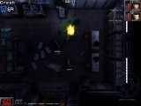
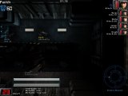
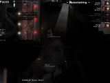
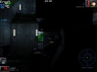
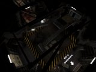
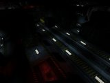

Alien Swarm - Fan-made maps
We'll be using this section to highlight the best in community maps for Alien Swarm. Stay tuned!

Phalanx Campaign preview! 29th May 2005
MjrHuRTz has been working hard constructing the Phalanx Campaign for Alien Swarm, which is our first entry into the Fan-made Maps section. We have some great screenshots and details of the campaign to show off here on the site. Check it out:
 |
 |
 |
{kind=link}
|  |  |  |
|  |  |
 |
{kind=link}
{kind=link}
{kind=link}
{kind=link}
{kind=link}
"The Space Station Phalanx is one of the many institutes ran by the wide-spread SynTek Megacorporation. Located in the Luyten system, the station houses many facilities, including research laboratories and large information databanks.
We know very little about the research operations here, but we do know they have been experimenting largely with organic life forms, including Plants, various Earth-found animals, and even specimens from the Swarm.
72 hours ago contact with the station collapsed. SynTek have made no comment about the incident, but we have now been forced to take action.
The IAF have been called up to investigate the station, and find any data on the incident. We believe this to be a case of Swarm infestation, proceed with extreme caution."
The Phalanx Campaign gives you 6 new missions, ranging from a Greenhouse facility to heavily infested living quarters. The campaign is due for release within the next two weeks, so keep an eye here and on the forums for it!